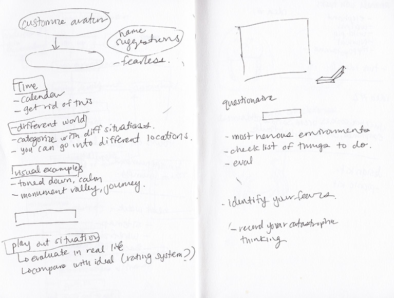
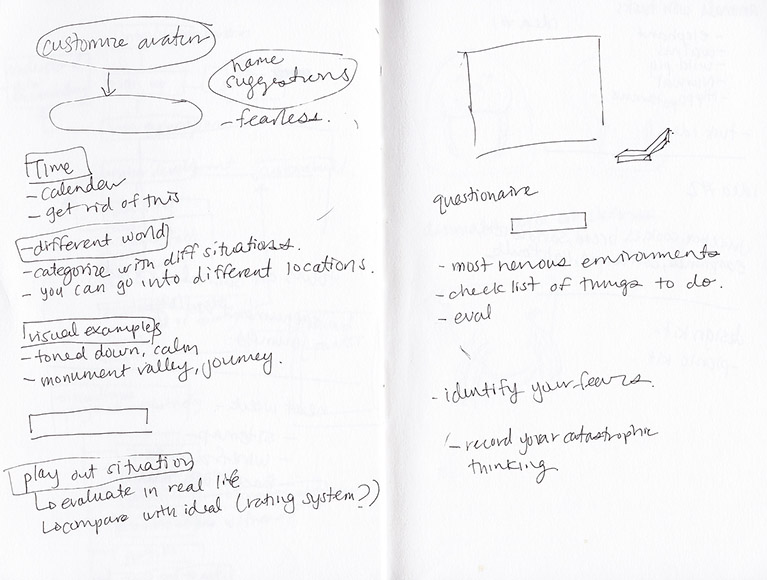

<

-What affects them
-Why this happens
-Causes of their anxiety
-Articles
-Origins
)-Comparable to sims
-User is encouraged to custom build it so it looks like themselves
-Rank your fears by situation
Date.Situation.Symptoms.
e.g date jan 8, situation: talking to professor anxiety symptoms:
rapid heart rate, upset stomach, shaking
-What was so particularily frustrating about this situation?
-Why was this giving me a hard time?
-What can I do next time?
-Enter your response to social situations
-write out your ideal response
-Compare this to your experiements/situations in real life
-Rehearse your situations
-Evaluate your situation
-Suggest things the individual could do (ie join a swim group...etc_
-Positive Quotes
-Achieve your goals
Phase 1
Market research
Wireframes of game
Storyboards of game
Moodboards
Sketches

Solution of Game:
identifying their weak points and thinking of solutions.
Identify.
-Severeness-What affects them
-Why this happens
-Causes of their anxiety
Understand.
-Extra documentary-Articles
-Origins
Build.
-Make your own avatar/character (Understand that everyone is unique.)-Comparable to sims
-User is encouraged to custom build it so it looks like themselves
-Rank your fears by situation
Write.
-Journal of facing your fear:Date.Situation.Symptoms.
e.g date jan 8, situation: talking to professor anxiety symptoms:
rapid heart rate, upset stomach, shaking
-What was so particularily frustrating about this situation?
-Why was this giving me a hard time?
-What can I do next time?
Evaluate.
(Visually laying out/building life) -Play your situations out visually-Enter your response to social situations
-write out your ideal response
-Compare this to your experiements/situations in real life
-Rehearse your situations
-Evaluate your situation
-Suggest things the individual could do (ie join a swim group...etc_
Reward.
-Points and Awards/Items-Positive Quotes
-Achieve your goals